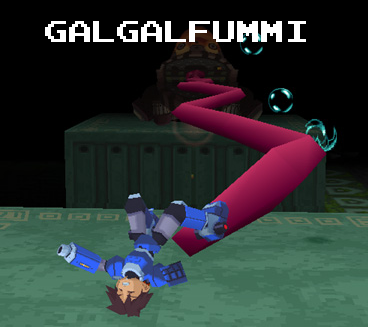

Overview
Galgalfummi may be the first guardian of the four keys that Megaman encounters, but he's certainly no pushover! After he's eaten the key that you need to accomplish this mission, you find that you're going to have to get it back the hard way.
This reaverbot's attacks are quite varied, as there are a rather large number of hazards present in addition to the reaverbot himself. Nevermind the fact that he can heal himself...
Movelist
Bubble Beam
Galgalfummi's most common (and most annoying) technique. The massive frog opens his mouth and spits numerous bubble onto the field. These bubbles will follow you, and you have to shoot them down to get rid of them, although they do dissipate over time. They also dissipate if Galgalfummi himself lands on them.
Constant movement is key to avoiding this attack, as you're going to find yourself leaping from platform to platform staying away from these things. Shooting them is recommended, although if you use a weapon which leaves an explosion (i.e. Homing Missile or Ground Crawler) you can damage him and eliminate the bubbles in one maneuver. Nifty!
Tongue Slap (W)
Galgalfummi has 3 variations of his tongue slapping move. This version has him slap his tongue sideways, effectively knocking you off of the platform you are on, and into something else you'd rather not be bothered with. Jumping is exactly what the doctor ordered here.
Tongue Slap (L)
This variation has him slap his tongue in an upwards motion, effectively rendering the jumping maneuver useless. A sidestep will do you good here.
Tongue Slap (Z)
*see above image*
This one's a bit unorthodox in the way it works. His toungue zigzags, effectively hitting you multiple times. Not exactly the most pleasant move to be hit with. Platform switching is a good idea.
Spark Spray
Should you venture to the same platform that Galgalfummi is hangout out on, he'll proceed to fire some paralyzing gas from his head. If you have the Light Barrier, you're fine, but otherwise you'll be inflicted with the Paralyze condition, which is the last thing you need in this fight!
Crash Landing
Normally Galgalfummi will jump from platform to platform anyway, but on some occasions he'll try to get fancy and spin-jump, causing him to mess up his jump and land on his back, leaving him vulnerable! Provided he doesn't land on you, this is a great opportunity to get some damage in. If you have the Drill Arm, this is your chance for an easy win!
Fly Grabber
Usually there's a Balfura in the arena that you can shoot down for health and WE. If Galgalfummi is low on health, he'll grab it with his tongue, healing a rather large chunk of his health! Note that he can miss, although he'll just keep trying until he catches it (see the video below). It is a rather funny sight, however!
Good Weapons to Use
Drill Arm
The main appeal here is that you can OHKO him when he does a Crash Landing, earning you a rather easy victory here.
Ground Crawler
With its cheap upgrade cost and mobile use, it's pretty much a no-brainer here. Whenever he opens his mouth you can fire round after round of these tings and take him out quickly! No real downsides here.
Synopsis
Galgalfummi's certainly a tough boss, but the right arsenal can make this fight much easier. The spinning blades around the edges of the arena don't serve to make this battle much easier, either. THe goal here is to stay on the platforms, as well as not letting him line up with you; you don't want to get smaked by that tongue of his. I give Galgalfummi an 8/10; not my favorite boss, but his design was certainly well thought out.